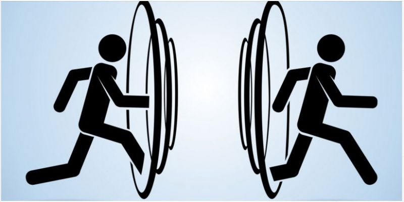

El problema que elegí a resolver es el de poder mantener contacto con personas a larga distancia, ya que las amistades y las relaciones son difíciles de mantener cuando una gran distancia nos separa.
La solución real más eficiente que extiste actualmente son las video llamadas y las redes sociales. Ambos llegan a crear el efecto que sigues cerca de la persona con la que interactuas, ya que con las llamadas puedes ver a la persona a trave de una cámara, además de poder hablar con él o ella. Y las redes sociales te permiten mensajear con las personas en cuestion de segundos, donde se crea una comunicación fluida y continua.
La solución futurista que elegí es usar teletransportadores para poder movernos de nuestras casas con nuestros amigos en cuestióen de segundos sin necesidad de hacer largos viajes en algun otro medio de transporte. Esto haría que puedas estar físicamente con las personas y no sufras por extrañar a ellos o ellas.
